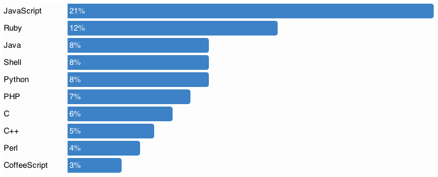
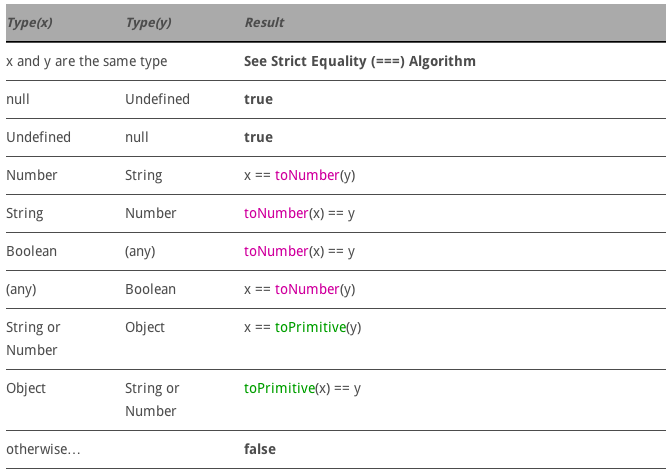
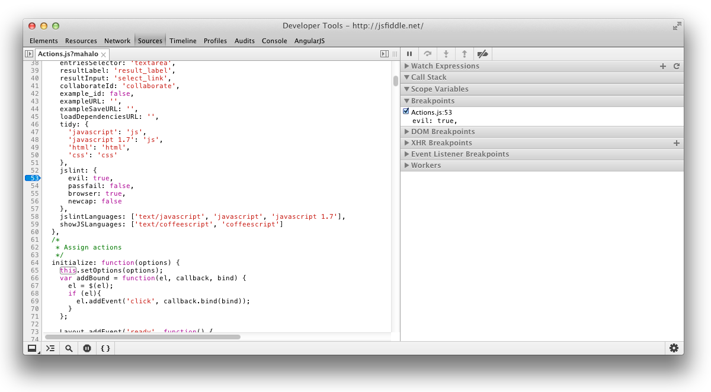

Things you probably should know about JavaScript
that you may not have been told before
Software Wizard at
hacking on
Michał Ostruszka | @mostruszka | michalostruszka.pl
I like JavaScript
Why should I?
web apps, native apps, mobile apps, mobile OS, servers, embedded etc.
Looks similar to Java?
var Person = function(name, age) {
this.name = name;
this.age = age;
this.displayInfo = function() {
console.log(this.name + ' is ' + this.age + ' years old');
}
};
var fox = new Person("Fox Mulder", 45);
fox.displayInfo();so it probably works like Java
And then...
Execution model
JavaScript is single-threaded
Queue for tasks
click, timers
blocking tasks with callbacks
Shares thread with UI stuff
This can freeze browser
Split work into
bite-sized pieces
You think you know
what's true ?
Every software, ever.
if(thisIsTrue) {
doThisStuff();
}
if(thisIsTrue) {
doThisStuff();
}This is true in JavaScript
true- Boolean value "true""false"- non-empty String10- Number with value other than 0[]- Any object (array is an object)
And this is false
false- Boolean value "false"''- empty String0- Number with value 0NaN- Number with value NaNundefinednull
Types coercion - toBoolean

When in doubt
equality with coercion ==
strict equality ===
var x = null, y;
x == y; /* true */
x === y; /* false */
1 == true; /* true */
1 === true /* false */
var arr = ['', undefined, null]
',,' == arr /* true */
',,' === arr /* false */Scope & hoisting
JavaScript has code blocks
but it has no block scope
It has function scope
This code works
function doSomething(x) {
if(x > 0) {
var greater = true;
}
console.log(greater);
}but is interpreted as
function doSomething(x) {
var greater;
if(x > 0) {
greater = true;
}
console.log(greater);
}Hoisting
Function declarations and variable declarations are always moved (“hoisted”) invisibly to the top of their containing scope by the JavaScript interpreter
Show me
function foo() {
if (true) {
bar();
var x = 1;
}
var y = 2
function bar() {
console.log('bar');
}
} function foo() {
function bar() {
console.log('bar');
}
var x, y;
if (true) {
bar();
x = 1;
}
y = 2
} Show me - part two
function foo() {
bar(); // boom!
var bar = function() {
console.log('bar');
}
}function foo() {
var bar; // undefined
bar(); // boom! in fact
bar = function() {
console.log('bar');
}
}And one more
function foo() {
bar();
var x = 1;
return;
function bar() { // WTF?
console.log('bar');
}
} function foo() {
function bar() {
console.log('bar');
}
var x;
x = 1;
return;
} Fun with functions
Functions are objects
one can add properties to it
function oneTimeFunction() {
if(oneTimeFunction.called === true) {
console.log('it was already called - exiting');
return;
}
console.log('working hard');
oneTimeFunction.called = true;
}
oneTimeFunction();
oneTimeFunction();
one time calls, listeners, memoizing
Functions as properties
can be reassigned
var obj = {
name: 'tom',
sayName: function() {
console.log('My name is ' + this.name);
}
}
function fake(obj, fnName, newFn) {
obj[fnName + "_backup_"] = obj[fnName];
obj[fnName] = newFn;
}
fake(obj, "sayName", function() {
console.log("I'm fake " + this.name)
});
obj.sayName();easy, hand-crafted fakes, stubs etc.
Functions have arguments
function doSth() {
console.log(arguments);
console.log(arguments.length);
}
doSth(); // [], 0
doSth(1,2,3); // [1, 2, 3], 3function doSth() {
console.log(arguments);
console.log(arguments.length);
arguments.forEach(function(arg) {}); // boom!
}
doSth(1,2,3);Array.prototype.slice.call(arguments)
Mixins
Collect stuff from others
Mix in from multiple sources
Property copy mixins
function extend(dest, src) {
for(var k in src) {
if(src.hasOwnProperty(k)) {
dest[k] = src[k]
}
}
return dest;
}Property copy mixins
var withSalary = {
calculateSalary: function(days) {
return this.amount * days;
}
};
var withDaysOff = {
daysOffLeft: function() {
return 20 - this.daysOffTaken;
}
};
extend(Employee.prototype, withSalary);
extend(Employee.prototype, withDaysOff);
var e = new Employee(20, 3);
e.calculateSalary(10);
e.daysOffLeft(10);
Function-based mixins
function withSalary() {
this.calculateSalary = function(days) {
return this.amount * days;
}
};
function withDaysOff() {
this.daysOffLeft = function() {
return 20 - this.daysOffTaken;
}
};
withSalary.call(Employee.prototype);
withDaysOff.call(Employee.prototype);
// same result
WHY U NO TEST JS?
This is full-featured language
Has its own testing tools
You'd better start testing it
for your own good
Some testing tools
Jasmine, Mocha, Qunit
JSTestDriver, Karma
SinonJS, PhantomJS
full testing stacks
Sample Jasmine test
describe('Matchers', function() {
it("TBD compares against `undefined`", function() {
var a = {
foo: 'foo'
};
expect(a.foo).toBeDefined();
expect(a.bar).not.toBeDefined();
});
});Power of dynamic language
you can return any value
it("Exposes loaded commits to view", function() {
var commits = ['commit one', 'commit two'];
spyOn(pendingCommitsService, "loadCommits").andReturn(commits);
var ctrl = controller('CommitsCtrl');
ctrl.loadPendingCommits();
expect(view.commits).toBe(commits);
});in reality it returns way more complex thing
Emulating privacy
No privacy for you yet
private reserved for future
all properties are accessible
Closures to the rescue
function makeAdder() {
var result = 0;
return {
inc: function() {
result++;
},
reportStatus: function() {
console.log(result)
}
}
}
var adder = makeAdder();
adder.inc();
adder.reportStatus() // 1
adder.result; // boom!
Module pattern
evaluate function immediately
var adder = (function() {
var result = 0;
return {
inc: function() {
result++;
},
reportStatus: function() {
console.log(result)
}
}
})();
adder.inc();
adder.reportStatus() // 1
define and invoke function immediately
Look I'm injecting stuff
passing dependencies
var adder = (function(yayQuery, underscorez) {
var result = 0;
return {
inc: function() {
// use yayQuery and underscorez
result++;
},
reportStatus: function() {
console.log(result)
}
}
})($, _);
adder.inc();
adder.reportStatus() // 1
Augment module
var adder = (function(mod) {
var result = 0;
mod.inc = function() {
result++;
};
mod.reportStatus = function() {
console.log(result)
};
return mod;
})(MODULE || {});This == context
Context changes depending on how function is called
You can control this
thisCats can't bark, right?
var dog = {
name: 'Reksio',
say: function() {
console.log(this.name + ' is barking');
}
};
var cat = {
name: 'Filemon',
say: function() {
console.log(this.name + ' is meeowing');
}
};
dog.say(); // Reksio is barking
cat.say(); // Filemon is meeowing
dog.say.call(cat); // Filemon is barking WTF?
var barkingCatFn = dog.say.bind(cat);
barkingCatFn(); // Filemon is barking WTF?
Call, apply, bind
call - fun.call(thisArg, arg1, arg2...)
apply - fun.apply(thisArg, [argsArray])
bind - fun.bind(thisArg, additionalArgs)
call & apply invoke functions
bind (as of ES5) returns function
Ok, but why would I?
callbacks, borrowing behavior
function save(data, afterSaveCallback) {
data.id = 123;
afterSaveCallback();
}
var data = {name: 'John'}
save(data, callback);
function callback() {
console.log('saved obj with id', this.id);
}
// 'saved obj with id undefined'
function save(data, afterSaveCallback) {
data.id = 123;
afterSaveCallback.call(data); // 1 way
afterSaveCallback.apply(data); // 2 way
afterSaveCallback.bind(data)(); // 3 way
}
...
// 'saved obj with id 123'
Strict mode
Enabled by 'use strict'
script-wide or function-wide
watch out when concatenating files
Some strict mode changes
- prevents creating global vars
- raises error when assigning to unassignable (NaN)
- raises error when deleting protected attrs
- properties must be unique in declaration
- function args names must be unique
Developer's toolbox
Build tools are must
node.js-based builds


there is still Ant as a choice if you wish, but hey...
Code analysis tools
JSLint, JSHint
if you don't use it
you are doing JavaScript wrong
Console
more than console.log
function performance() {
for(var i=0; i<1000000; i++) {
var result = {}.hasOwnProperty(i);
}
}
console.time('checkPerf');
performance();
console.timeEnd('checkPerf');
// perf: 190.096ms debug, dir, group etc.
Shims, polyfills
es5_shim for old browsers
features detection - Modernizr
Developer tools
Bonus, some tricks
condition && foo();
array.length = x;
var a = void 0;
Array(2) vs Array(2,3);
parseInt('033') vs parseInt('033', 10);
Number('10') vs new Number('10');